Ubuntu下ubertooth one环境配置
本文所述的一切技术仅供网络安全研究学习之用，请勿用于任何的违法用途，否则由此所产生的一切后果自负！
首先安装依赖
apt-get install cmake libusb-1.0-0-dev make gcc g++ libbluetooth-dev \
pkg-config libpcap-dev python-numpy python-pyside python-qt4
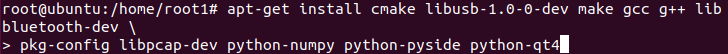
为了避免权限出现问题我在安装前直接sudo su了，这样就不用每次操作都输sudo了 然后再桌面创建一个名为ubertooth的文件夹，并赋予777权限，以便之后不通过root用户也可以执行操作
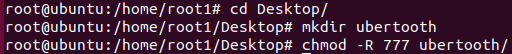
然后通过github下载libbtbb，因为某些大家都知道的原因，我这边还通过了proxychains的代理
wget https://github.com/greatscottgadgets/libbtbb/archive/2018-12-R1.tar.gz -O libbtbb-2018-12-R1.tar.gz

然后执行解压命令
tar -xf libbtbb-2018-12-R1.tar.gz
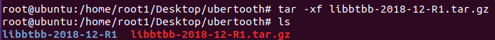
进入目录，创建新的文件夹build（忽略我因为手残一开始打错了），然后开始编译
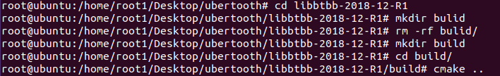
cmake执行完后继续执行make

然后执行make install
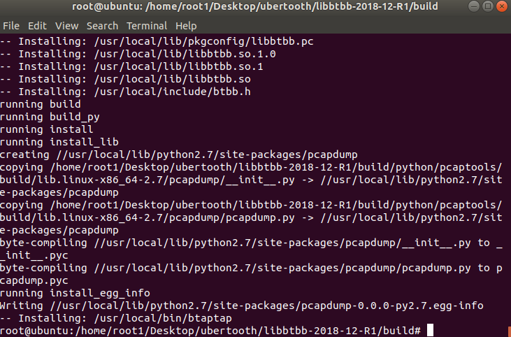
看起来没有任何报错，根据官方文档如果第一次安装时报错还需执行sudo ldconfig
执行完了以后就开始安装ubertooth tools了
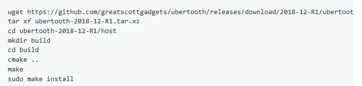
wget https://github.com/greatscottgadgets/ubertooth/releases/download/2018-12-R1/ubertooth-2018-12-R1.tar.xz
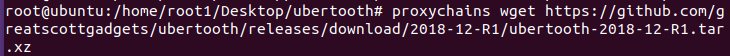
解压

之后跟着上面截图操作即可，如果报错按之前的命令执行，反正我没报错
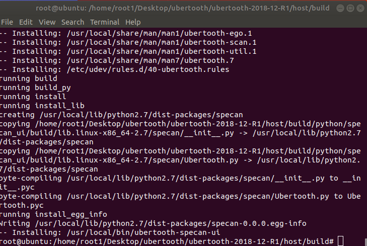
接下来是安装wireshark
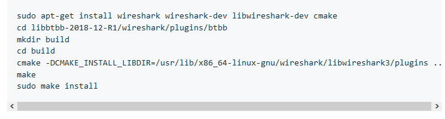
先安装依赖
apt-get install wireshark wireshark-dev libwireshark-dev cmake
然后创建目录开始编译 没有error简直完美，记得之前在ubuntu16.04里配环境各种error心态都崩了
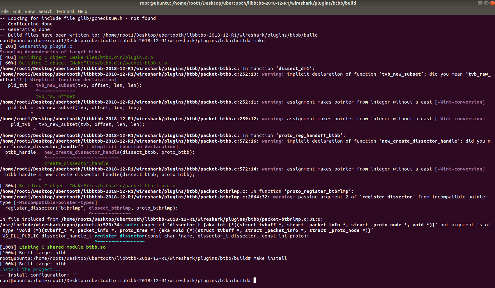
然后重复上面的一些操作

按着步骤执行完了轻松加愉快
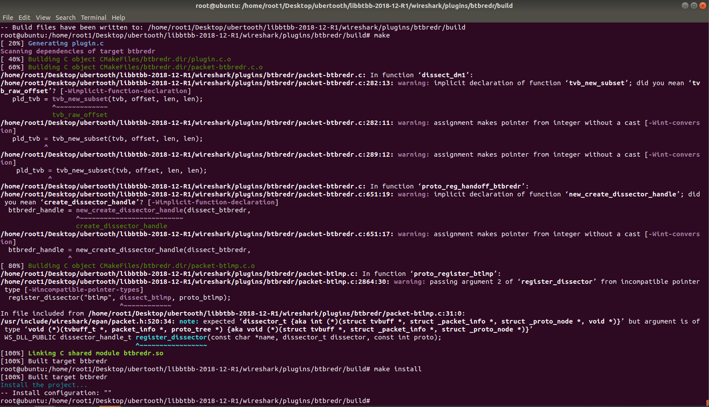
插上我们的ubertooth
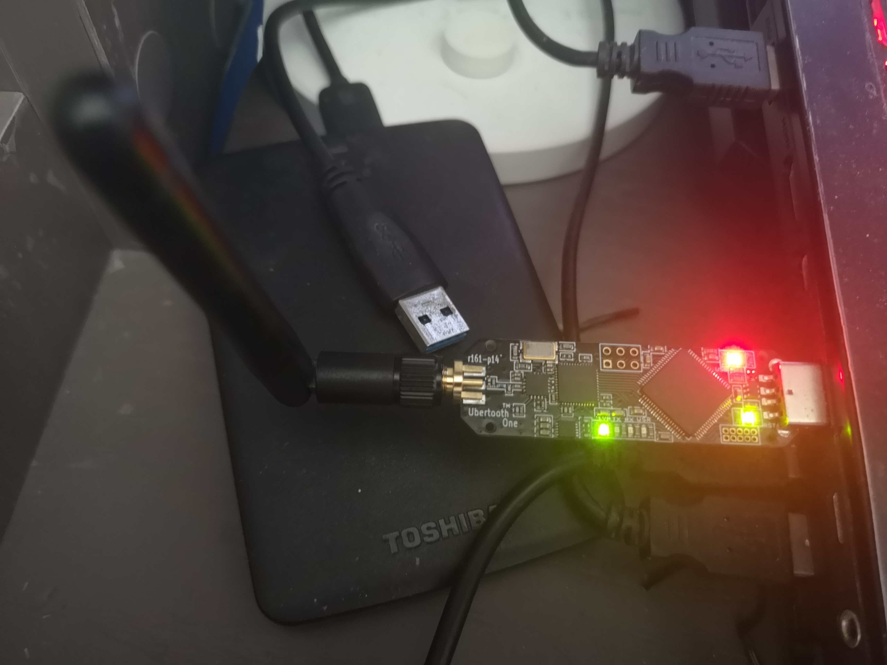
执行以下扫描康康，从我们的HCI里读到了一些东西，也就是和主机配对过的一些东西
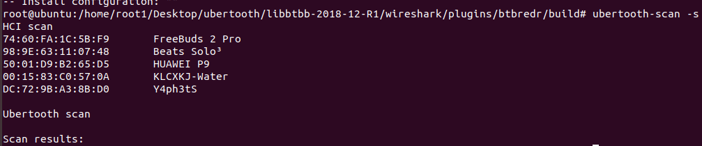
接着执行
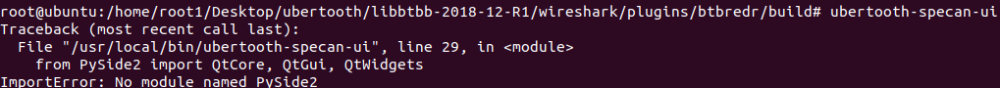
貌似报错了，少了个库，直接pip install就完了这玩意看起来还不小
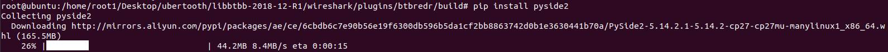
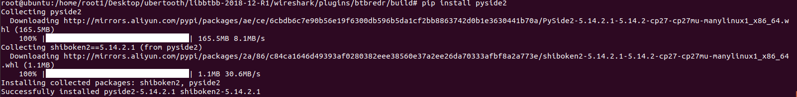
再开一遍就开始炫酷跳动了
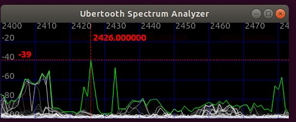